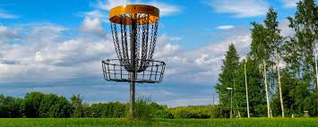
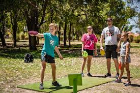
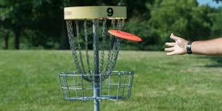

Tips and Tricks for Disc Golf
Time to spill the 'tee'
Because this site is geared towards beginners, we thought it would be useful to give you some tips and tricks to help you improve your disc golf game. While not all disc golf tips and tricks recommended will improve your game. I`m sure you will find some that you love and some you hate more than a pesky tree branch on the course.
- Practice makes perfect. Like anything you must practice to get better at disc golf. Attending the course frequently and learning the basics of the throwing a disc will help you tremendously. Don`t forget to stretch and know your limits when it comes to playing disc golf.
- Watching professionals on YouTube can really help your game! Learning different throwing techniques which include how to transition your weight or how to stand in a video can help you throw further and more accurate. Again, you MUST practice for it to stick!
- You can find apps such as UDisc or Disc Golf GPS course to help you when playing. UDisc is a free app that can track your score and sync you with the other players. UDisc also has a map with locations of each course in your area and can tell you about local events that may be happening around you! If you want to compete UDisc is the app for you.